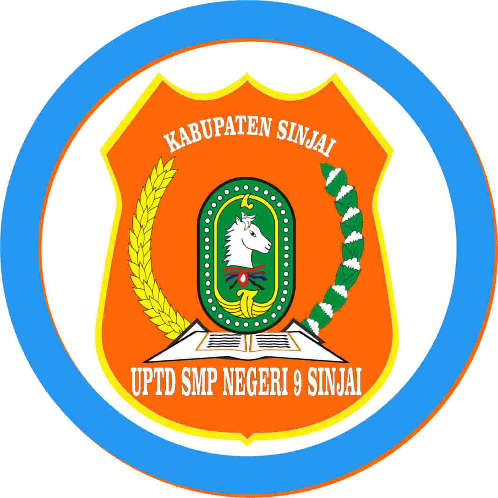

Sistem Akademik

Dashboard
Data Guru
Data Siswa
Akademik
Nilai Semester
Penilaian
Disdik US 2025
Link Peng. Soal
Nilai SAS Genap
Pengumuman Kelulusan
Dashboard
Data Guru
Data Siswa
Akademik
Nilai Semester
Penilaian
Disdik US 2025
Link Peng. Soal
Nilai SAS Genap
Pengumuman Kelulusan

Selamat Datang di
UPTD SMP Negeri 9 SINJAI
©2025 By Admin